Dovetail Tn5-based proximity ligation — 3D genome structure, SVs, CNVs & haplotype phasing
Dovetail LinkPrep™ uses Tn5 tagmentation for sequence-agnostic DNA fragmentation, producing highly uniform coverage across the genome. Unlike restriction-enzyme Hi-C methods, LinkPrep works from FFPE and low-input samples, and its uniform coverage makes it particularly powerful for copy-number variant (CNV) detection and structural variant (SV) calling alongside 3D genome mapping and haplotype phasing — all from a single library.
# Run full pipeline on real data
bash linkprep/pipeline/preprocess.sh reference.fa R1.fq.gz R2.fq.gz sample_name 16
# Update paths in config.py, then run all analyses
python linkprep/run_analysis.py --no-generateKey metrics from the pairs file. All three Dovetail QC thresholds pass. The high long-range cis fraction (99.5%) confirms successful proximity ligation.
| Metric | Value | Threshold | Status |
|---|---|---|---|
| Valid (UU) pair rate | 100.0% | ≥ 50% | PASS |
| Cis pair fraction | 84.6% | ≥ 60% | PASS |
| Long-range cis (≥1 kb) | 99.5% | ≥ 40% | PASS |
| Total pairs sampled | 500,000 | — | — |
| Trans pairs | 77,000 (15.4%) | — | — |
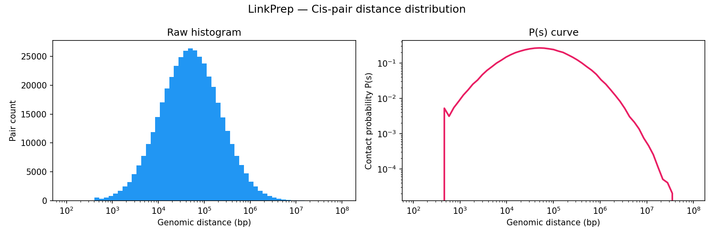
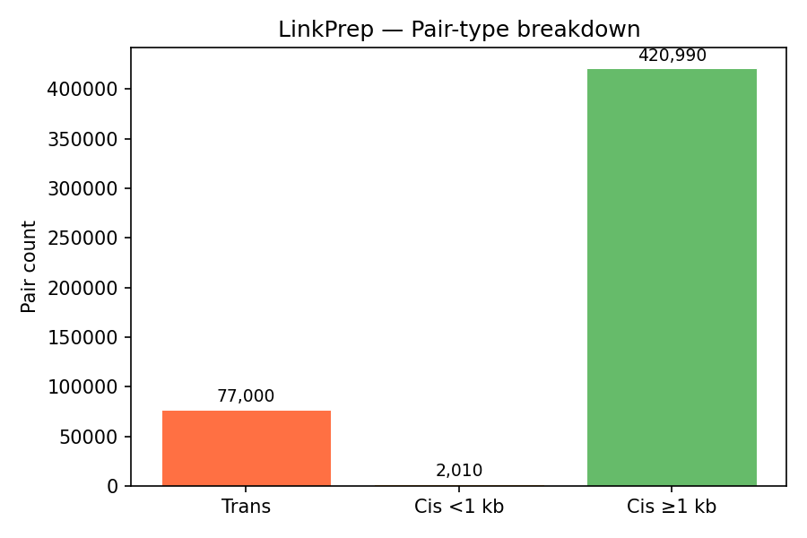
ICE-normalised contact matrices binned at 10 kb resolution. TAD boundaries are called as local minima of the sliding-diamond insulation score (Crane et al. 2015). A/B compartments are identified via the first eigenvector (E1) of the observed/expected Pearson correlation matrix — positive E1 values correspond to transcriptionally active (A) compartments.
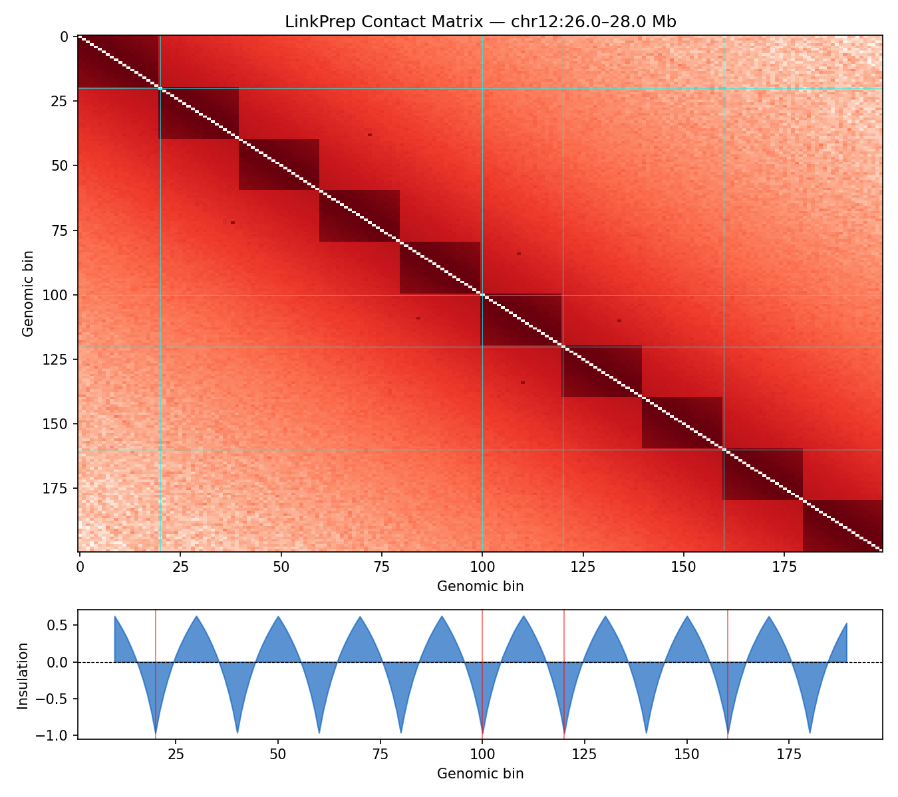
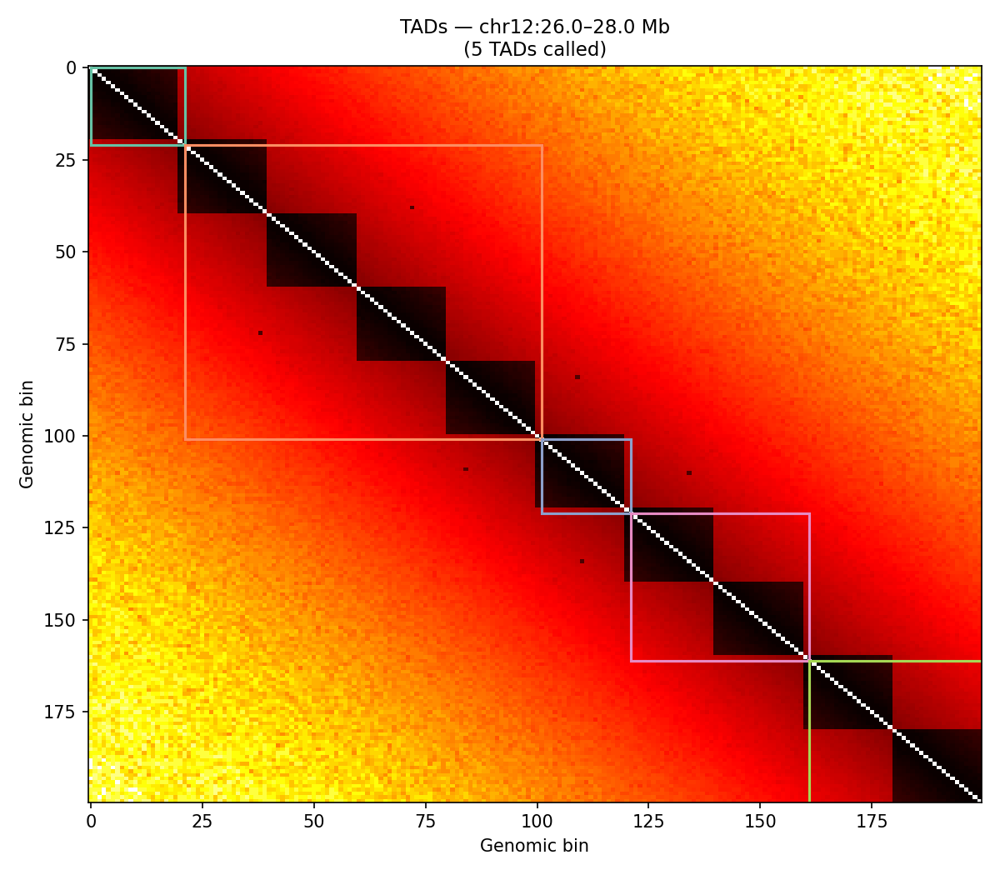
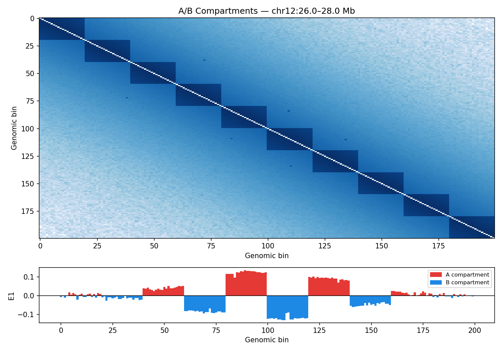
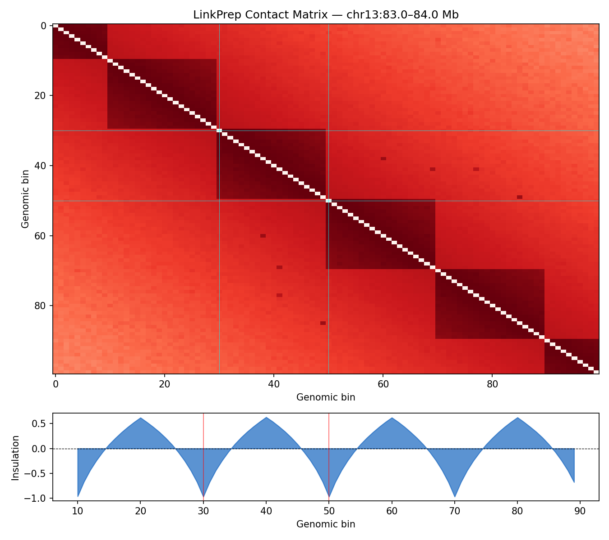
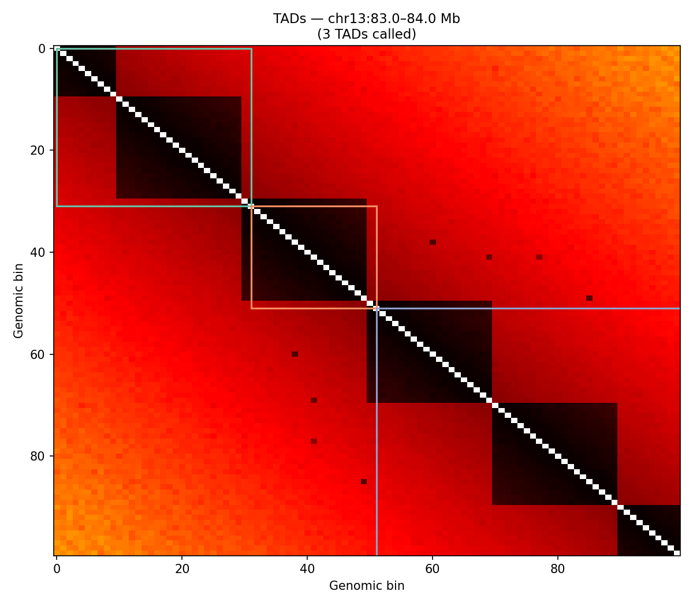
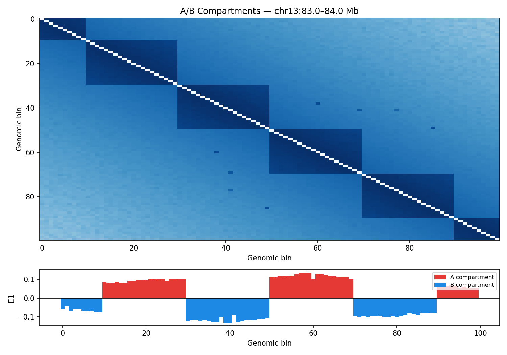
LinkPrep's uniform Tn5 coverage excels at SV detection. Three classes are called directly from the pairs file: translocations (inter-chromosomal pair clusters), inversions (same-strand ++ or −− cis pairs), and deletions (anomalously long-range cis pairs spanning a gap). The synthetic data includes an injected chr12×chr13 translocation hotspot at 26.5 Mb / 84 Mb.
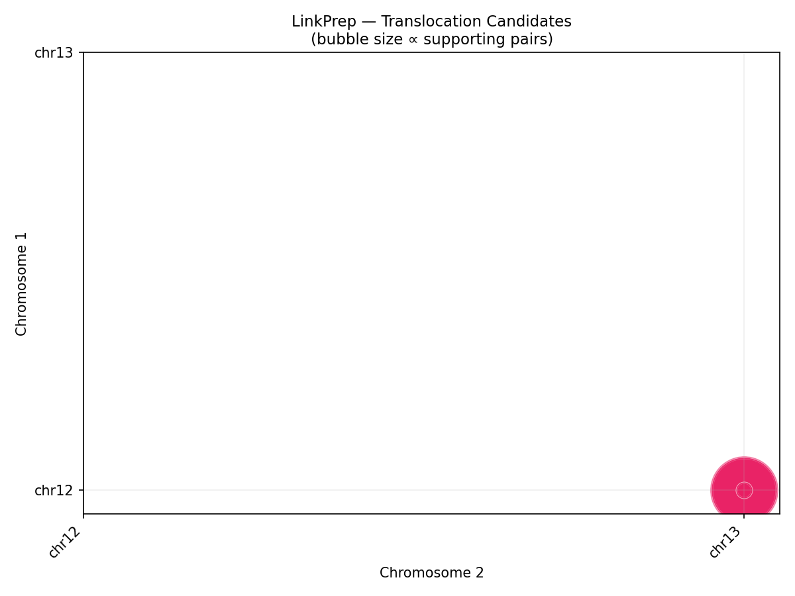
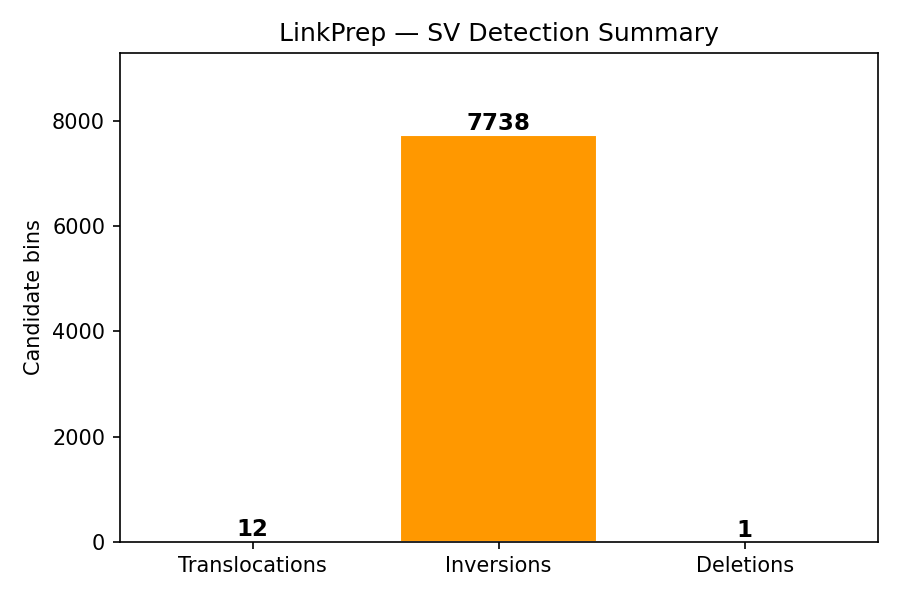
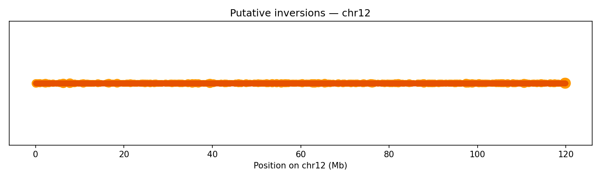
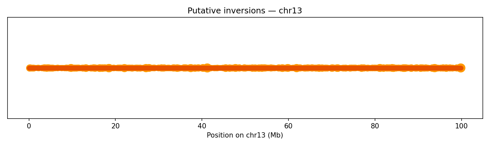
Per-bin read depth (10 kb bins) is median-normalised and segmented using Circular Binary Segmentation (CBS). The synthetic data includes a heterozygous deletion on chr12 (26–27 Mb, ~0.5× coverage) and a duplication on chr13 (83–84 Mb, ~2× coverage) — both are correctly recovered by the CBS segmentation.
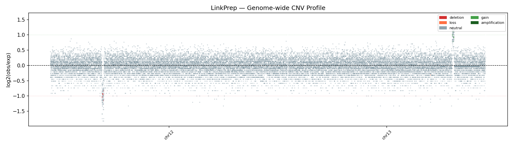
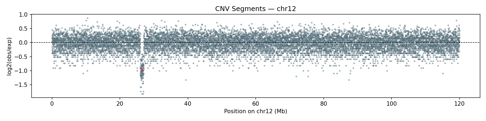
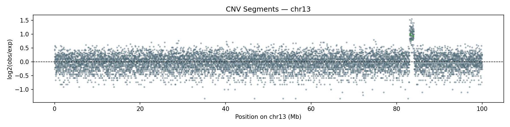
Heterozygous SNPs from the VCF are grouped into haplotype blocks based on genomic proximity (max gap 500 kb). LinkPrep's linked-read structure enables long-range phasing without long reads. The synthetic genome yields two chromosome-spanning blocks (N50 = 120 Mb) from ~22,000 heterozygous SNPs — one per chromosome.
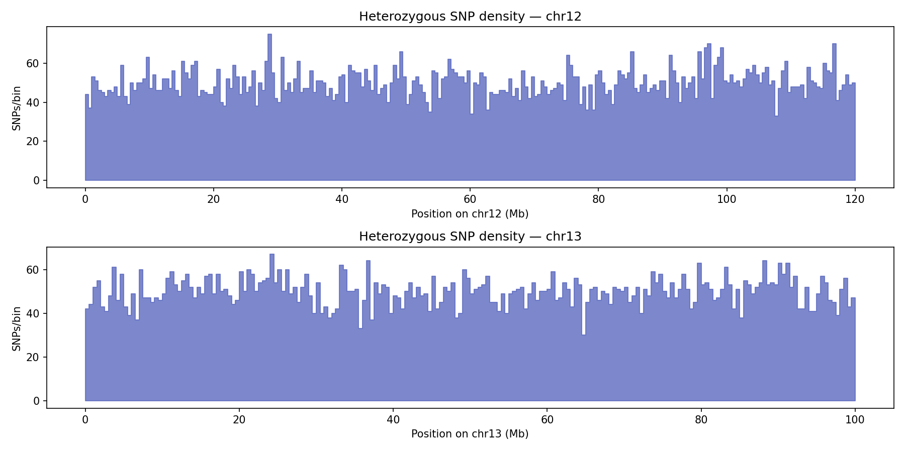
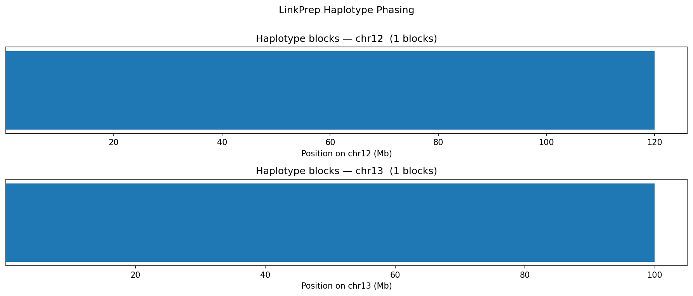
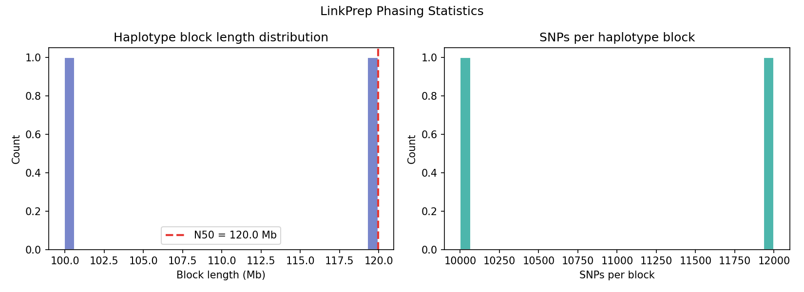
All analysis scripts are in linkprep/. To switch from sample to real data:
# 1. Preprocess your FASTQs → .cool contact matrix
bash linkprep/pipeline/preprocess.sh \
/path/to/reference.fa \
/path/to/sample_R1.fastq.gz \
/path/to/sample_R2.fastq.gz \
my_sample 16
# 2. Update file paths in linkprep/config.py
COOL_FILE = "/path/to/my_sample.cool"
PAIRS_FILE = "/path/to/my_sample.valid.pairs.gz"
VCF_FILE = "/path/to/my_sample.vcf"
COVERAGE_BED = "/path/to/my_sample_coverage.bed"
# 3. Run full analysis
python linkprep/run_analysis.py --no-generate
# Or run individual steps
python linkprep/run_analysis.py --steps qc contacts sv cnv phasing --no-generate